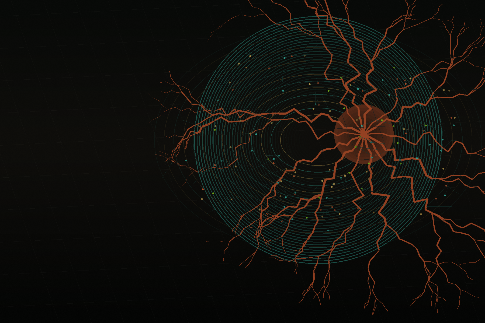
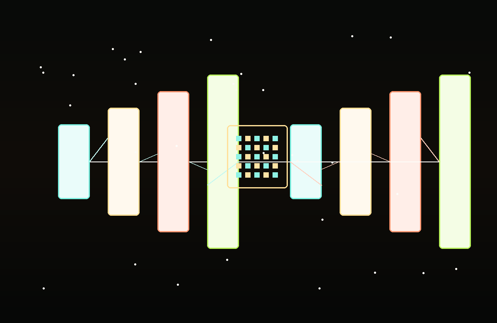
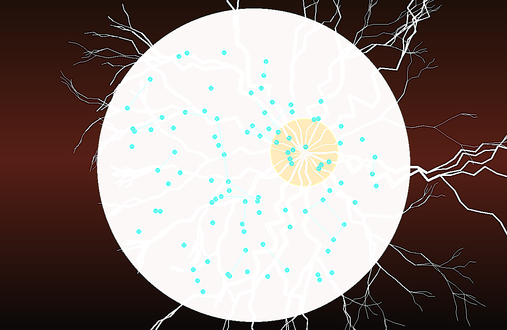
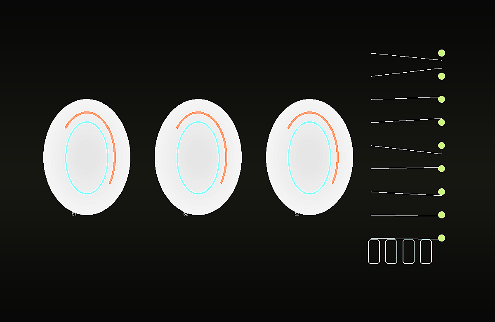
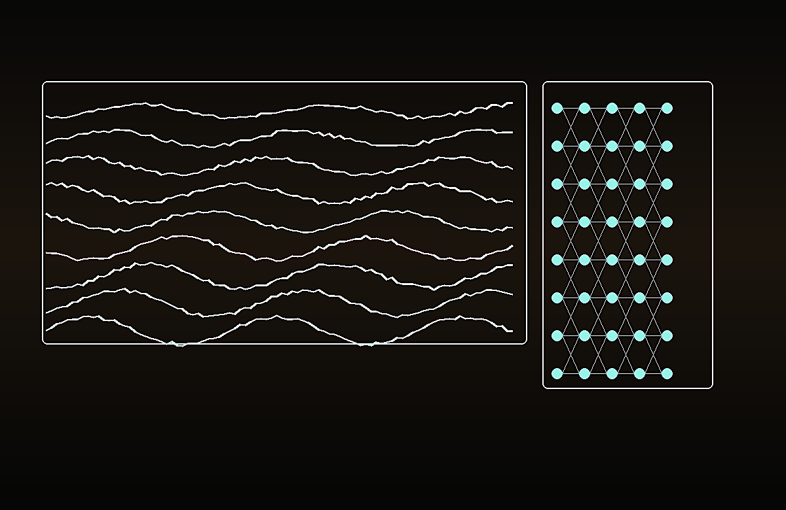

Retinal Phenotype Classification
CNN and graph-attention pipelines for CVD-associated retinal phenotype classification using fundus images, superpixel hierarchies, and multi-feature retinal maps.

Biomedical AI Researcher · Medical Imaging · Graph Learning
I build clinically minded deep learning systems for retinal and multimodal medical imaging, with work spanning segmentation, CVD phenotype classification, diabetic retinopathy analysis, and MRI-based Alzheimer's prediction.
Research Direction
CNN and graph-attention pipelines for CVD-associated retinal phenotype classification using fundus images, superpixel hierarchies, and multi-feature retinal maps.
Attention-guided U-Net, Transformer, ResAttU-Net, and frequency-refinement approaches for robust segmentation in retinal, skin lesion, and MRI workflows.
Reproducible training, validation, mixed-precision optimization, and practical inference interfaces designed for research teams and non-technical end users.
Research Experience
My research work sits at the point where medical imaging, experimental rigor, and practical AI deployment meet.
Department of Electronics & Communication Engineering, NIT Silchar
Science and Engineering Research Board, Government of India
Publications
Pattern Recognition Letters, 2026
DOI14th IEEE CSNT, VIT Bhopal, 2025
DOI2nd SIPCOV, NIT Silchar, 2025
DOIBECITHCON, Dhaka, 2025
DOIMulti-feature retinal maps for CVD-associated phenotype classification · Image and Vision Computing
MAGIC-DR graph-based microaneurysm identification and classification · IEEE Multimedia
ResAttUNet and multi-stage Alzheimer's disease prediction from MRI · Biomedical Signal Processing and Control
FD-GNet for early classification of retinal abnormalities · IEEE Access
Selected Projects

Hybrid U-Net and Transformer self-attention segmentation model with frequency-domain attention, multi-scale skip connections, and residual pathways.

Retinal superpixel hierarchy and graph-attention approach for CVD-associated retinal phenotype classification from fundus imagery.

Grey matter segmentation, multimodal MRI preprocessing, and CNN-based risk prediction pipeline for Alzheimer's disease research.

DenseNet169 multiclass classification for lung OCT images with augmentation, performance metrics, and a Tkinter inference interface.
Education & Recognition
Master of Science, Electronics & ICT Engineering Technology
Expected September 2026 · Antwerp, BelgiumB.Tech, Electronics & Communication Engineering
2021 - 2025 · First Class · Thesis awarded full marksRanked 1st in AI Track and 4th overall among 65 competing groups.
Department of ECE, NIT Silchar · May 2025Government of India merit scholarship covering full B.Tech study in India.
Indian Council for Cultural Relations · 2021 - 2025Technical Stack
CNNs, U-Net variants, Transformer attention, graph neural networks, classification, segmentation.
Dataset integration, preprocessing, ablation, validation, scientific writing, peer review.
Technical communication, team coordination, Overleaf, Google Workspace, Microsoft Office, Canva Pro.
Academic Service
Biomedical Signal Processing and Control, Elsevier Q1 Journal.
Prothom Alo Bondhushova, NIT Silchar Subsection.
Technoesis Annual Technical Festival, organizing STEM outreach for 200+ students.
Contact
I am open to research collaborations, graduate opportunities, and biomedical AI projects focused on robust medical image analysis.